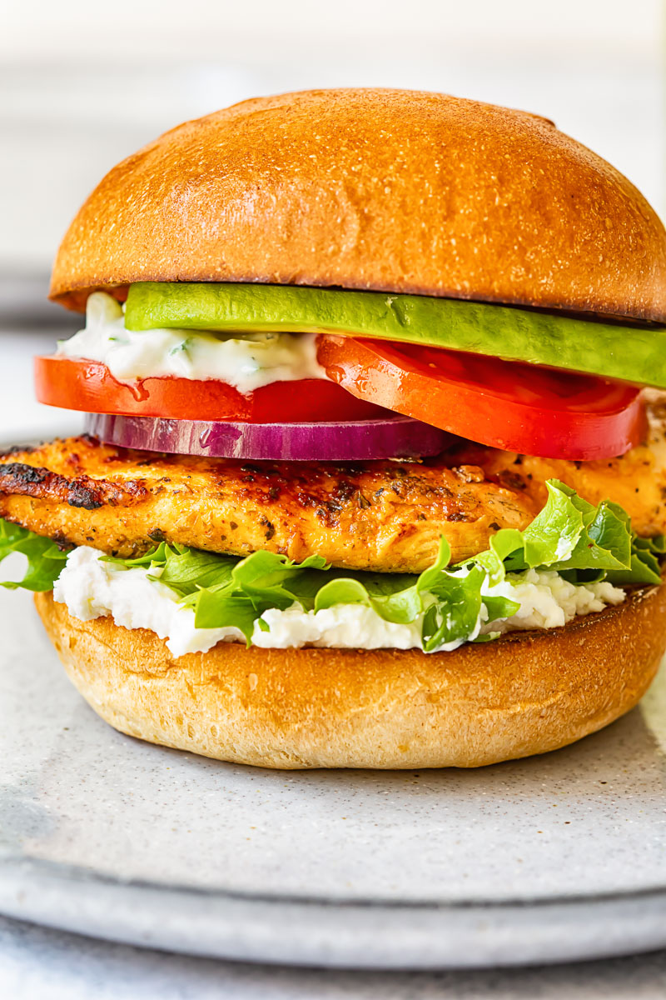

Greek Chicken Burger with Feta

Ingredients
- 1 pound ground chicken
- ½ cup dry bread crumbs
- 1 egg
- 1 tablespoon lemon juice
- 2 tablespoons chopped sun-dried tomatoes
- 1 tablespoon chopped fresh basil
- 3 teaspoons chopped fresh oregano
- salt and pepper to taste
- 2 ounces crumbled feta cheese
Directions
- Preheat an outdoor grill for medium-high heat and lightly oil the grate.
- Mix chicken, bread crumbs, egg, lemon juice, sun-dried tomatoes, basil, oregano, salt, and pepper together in a bowl; form mixture into 5 patties. Divide feta cheese into 5 equal portions; place a portion of feta cheese atop each patty and fold chicken mixture around cheese to secure it in the center.
- Cook patties on the preheated grill until no longer pink on the inside and juices run clear, 5 to 7 minutes per side. An instant-read thermometer inserted into the center should read 165 degrees F (75 degrees C).